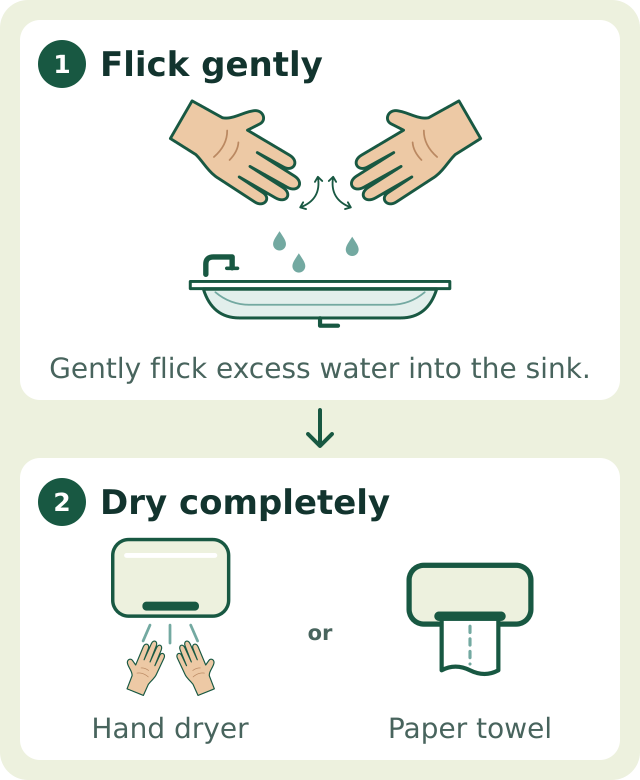

flick-dry
verb · flick-dries; flick-dried; flick-drying
To flick excess water off, then dry.
noun
A drying routine that flicks off excess water before drying.
Flick excess water off first. Then dry completely—with a hand dryer or paper towels.
Flick-dry is a small hand-drying habit anyone can try.

verb · flick-dries; flick-dried; flick-drying
To flick excess water off, then dry.
noun
A drying routine that flicks off excess water before drying.
Choose the version for your washroom. The flick is the same.
Safety first. Follow facility instructions. Avoid splashing people or nearby surfaces. Skip flicking if it is unsafe or difficult for you.
These steps are proposed guidance under review and are not a public-health-approved protocol. Our measurements so far cover hand dryers only; for paper towels, refer to Joe Smith’s TEDx talk, How to use a paper towel, which demonstrates a shake-and-fold approach to paper-towel drying.
Our trials, infographics, and stickers use 12 flicks. It has not yet been compared with other counts.
Help people build the flick-dry habit through clear, accessible public education.
Online: Website, social media, and email outreach.
In person: Volunteer visits to local businesses, schools, and community organizations.
A world where flick-dry is an everyday habit that saves energy and paper.
Our aspiration guides the project. Evidence determines where and how to recommend the practice.
So far, our research has included three stages. First, we reviewed published studies on flicking water off the hands before drying. Next, we measured how long electric hand dryers ran when using the flick-dry method compared with drying directly without flicking. In the third stage, we promoted the habit in local businesses. Feedback from volunteer outreach led us to add guidance for paper-towel use as well. We have not yet measured whether this guidance has reduced paper-towel use.
Abstract
Flicking water off washed hands before using a towel or dryer is a plausible way to save resources, but its effect must be separated from the drying that follows. Flicking already appears in experimental protocols. Patrick et al. used two flicks, and Suen et al. used at least five shakes before drying.[1][7] Environmental comparisons depend on equipment and modeling assumptions.[1][3][11] No source shows how flick count translates into water removed or towels or electricity saved, so this review supports dose-controlled evaluation of pre-flicking.
Numbered references are listed on the Stage 1 page.
Read the Stage 1 summary →Analysis snapshot · September 6, 2026
14 exports, 102 unique runs, and 15 provisional comparison sets. After six invalid measurements are excluded, 96 reviewed runs contribute to within-set comparisons.
Every comparison set recorded a lower median dryer runtime with flick-dry. Savings may vary across users and dryers. All runs used electric hand dryers.
Read the Stage 2 report →Nine businesses currently display our educational sticker. Volunteer outreach also revealed an important gap: many locations rely on paper towels rather than electric hand dryers, which our original dryer-only sticker did not address. In response, we added paper-towel guidance, created a supporting video, and developed a separate infographic for paper-towel use so that the initiative now guides both hand-drying methods.
Read the Stage 3 summary →Want to compare flick-dry and direct-dry for yourself? Follow our four-step procedure and safety guidance.
Measure it yourself →Not yet available for public download.
Our education-first app focuses on flick-dry for hand-drying, uses the microphone to estimate hand-dryer running time, and asks whether each use included flick-dry. Select the same physical dryer to compare uses involving flick-dry or direct-dry, with per-use and cumulative estimated time and energy changes.
Measurements stay local to your phone. No raw audio is saved, and no account or upload server is required. An optional ZIP export lets you choose whether to email your measurements. Monitoring has a manual Stop control and an automatic timeout.
The app currently supports hand dryers only. Using paper towels? Follow the paper-towel steps.
Wash and rinse, then compare direct-drying with flicking followed by drying. The accelerated example timers show 15 seconds versus 10 seconds: 5 seconds, or 33.3%, less dryer time. Example only, not measured or guaranteed.
Visiting science museums in different cities has always been part of my family vacation. After visiting so many science museums, the exhibits started to blend. However, one I still recall vividly was an exhibit about flicking excess water off your hands to use less paper to dry them. What struck me was the idea that such a small, seemingly insignificant action could have a meaningful impact. The specific museum and city have long since slipped my mind, but the idea the exhibit presented stayed with me. It made me wonder how I could apply this concept to a society increasingly dependent on electricity; in particular, I wondered how flicking excess water could reduce the energy consumption of electric hand dryers.
That question sparked the Flick-dry Initiative. After reviewing current research, I developed app prototypes and collected and analyzed data. The early app prototypes didn’t work. Rather than keep adjusting them, I switched to a data-driven approach: I recorded dryers running, labeled the data, and used those labels to develop the Flick First Dryer Verifier app. This approach produced a working tool for recording dryer running times and supporting comparisons between flick-dry and direct-dry trials.
My goal is to bring this work into public education. Online, through this website, the Flick-dry app, email, and social media, I want to help people around the world understand and try a simple habit. Locally, our volunteers visit businesses, schools, and community organizations to share it in person. By collaborating with them, I hope to turn the vision into practice—small changes in daily habits that make a big impact on resource savings.
While placing Flick-dry stickers with local businesses, our volunteers noticed that many of the washrooms they visited use paper towels, not hand dryers. That brought the project full circle—the museum exhibit that started it all was about using less paper. So this website now shows how to flick-dry with either a hand dryer or paper towels.
Thank you to the businesses, schools, and community organizations helping bring this everyday habit to more people, whether through a sticker in their washrooms or by sharing what Flick-dry is through newsletters, social media, events, and other channels.
Meet our participating organizations Print a stickerQuestions, feedback, or interested in supporting the Flick-dry Initiative? We’d love to hear from you.
Email us: contact@flick-dryinitiative.org
See demos, project updates, and ways to take part.
@flickdryinitiativeTap or scan to visit Instagram.